Quem foi Filipe
Filipe Martins Assink nasceu em 02 de agosto de 1991. Filho de Célio José Assink e Lissandra Martins Assink, irmão de Leonardo e Natália, cunhado de Amanda e tio amoroso e dedicado de João Guilherme, Anthony e Ravi.
Filipe foi presença, amizade, alegria, histórias e momentos que permanecem vivos na memória de todos que tiveram a oportunidade de conhecê-lo.
“Algumas pessoas passam pela nossa vida. Outras deixam uma história que permanece para sempre.”
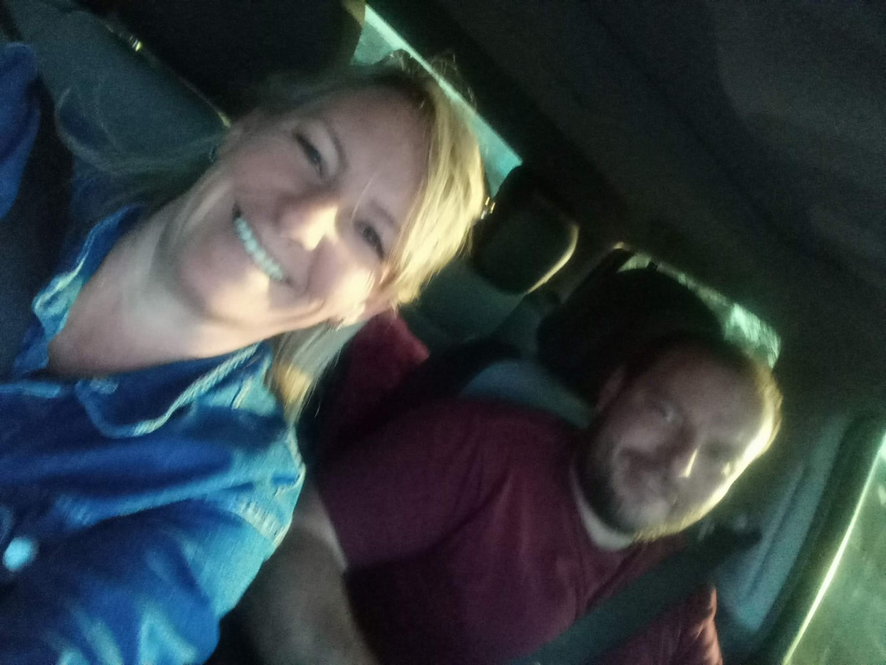
Sua trajetória
Filipe construiu sua história através das pessoas que amava, dos amigos que conquistou e dos momentos que viveu. Sua alegria, seu jeito de ser e sua presença deixaram marcas profundas em todos aqueles que compartilharam a vida com ele.
Sua história continua sendo contada pelas lembranças, fotografias, vídeos, conversas e por tudo aquilo que mantém sua presença viva entre nós.
Memórias
Cada fotografia guarda um instante. Cada instante guarda uma história.
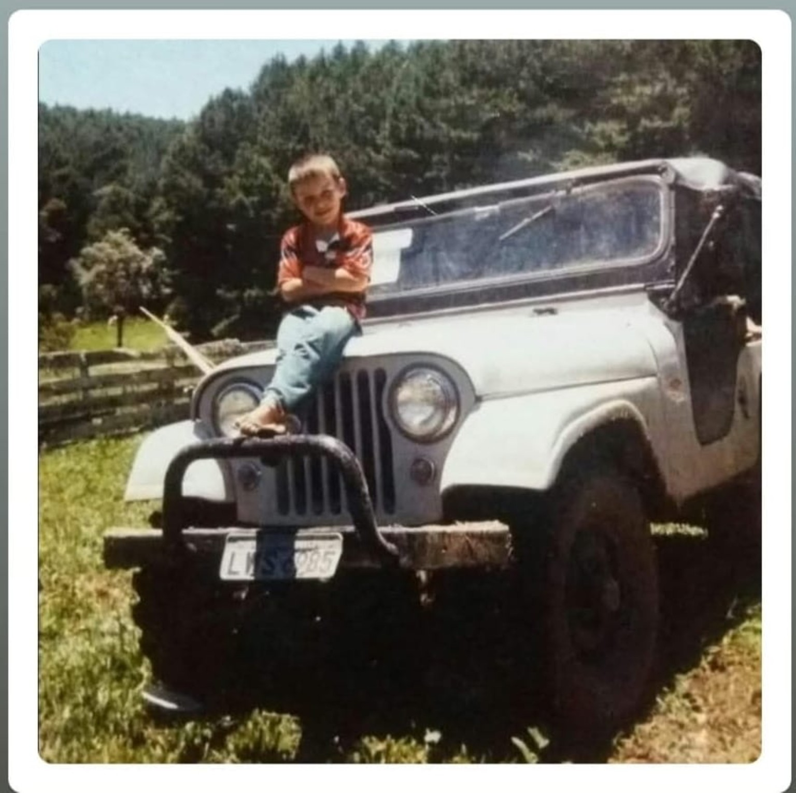
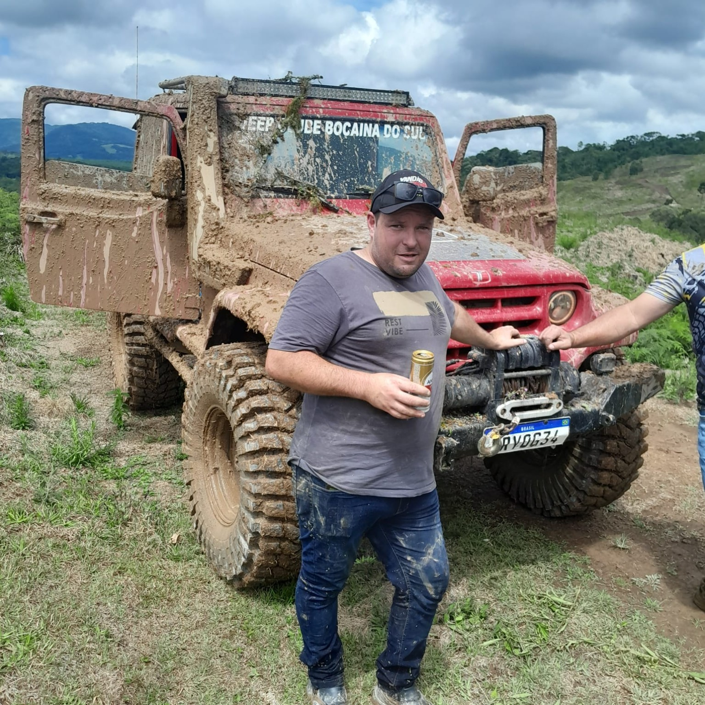
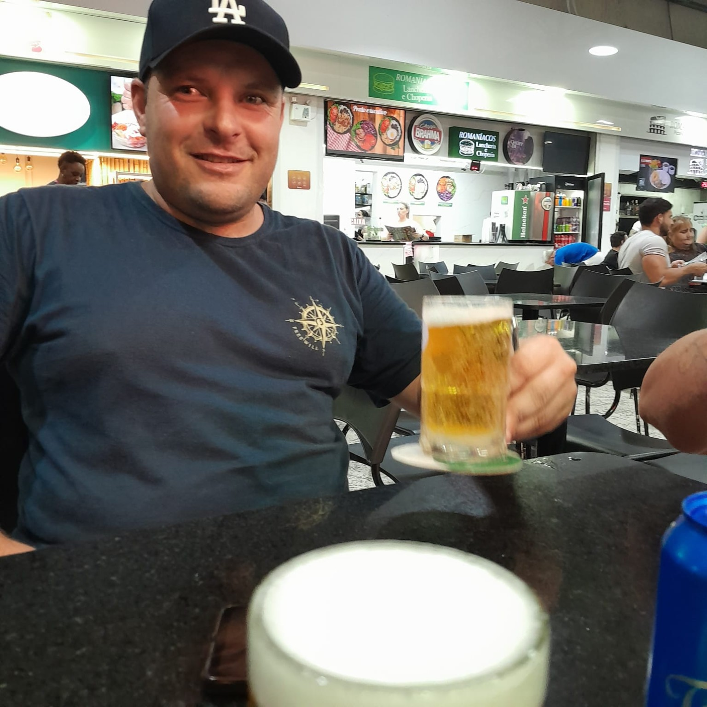
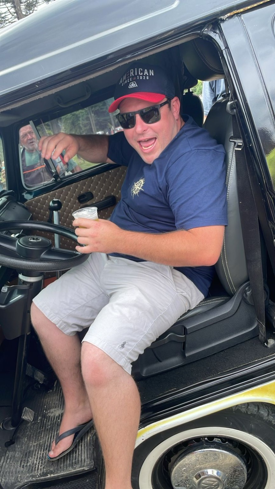
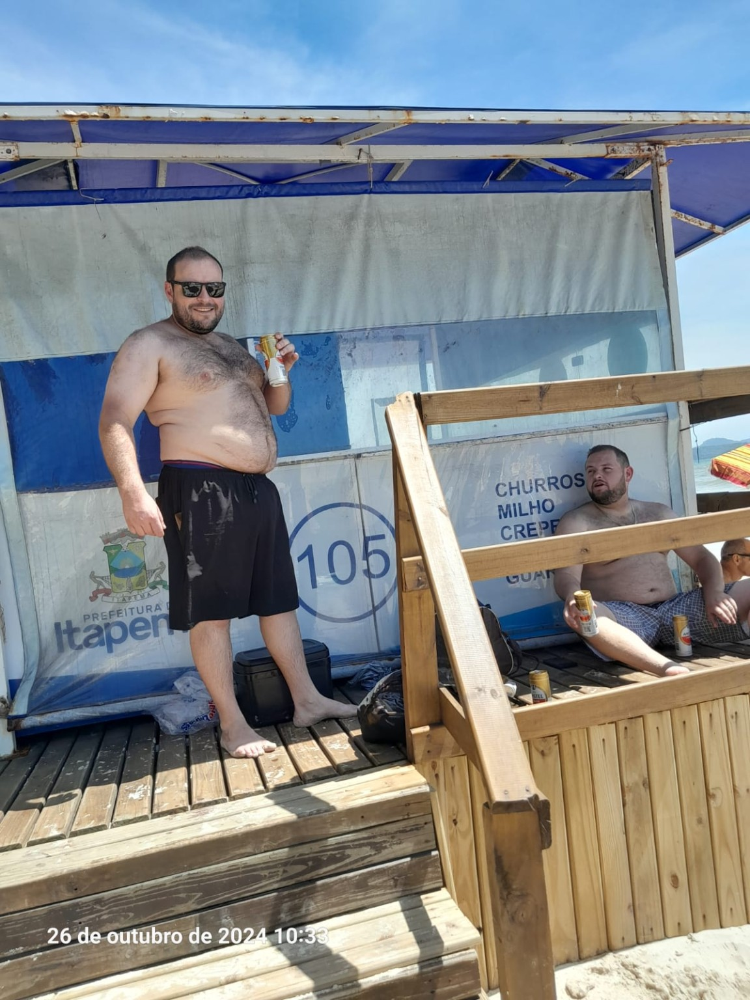
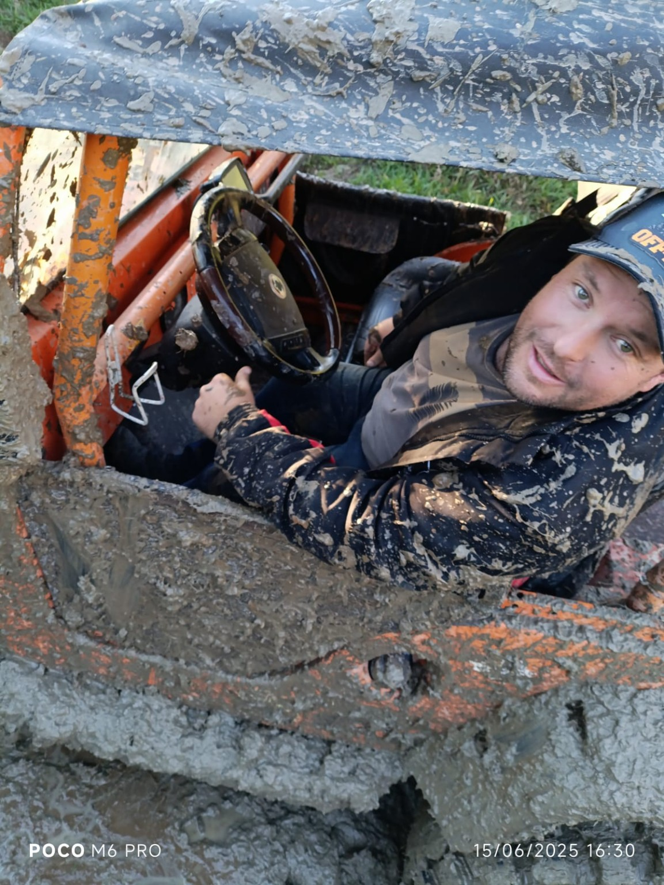
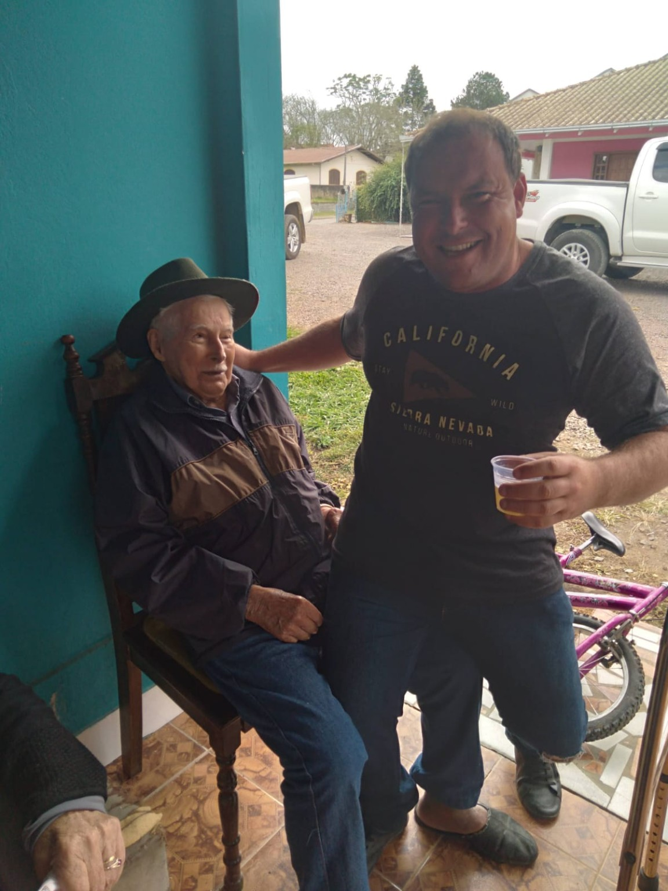
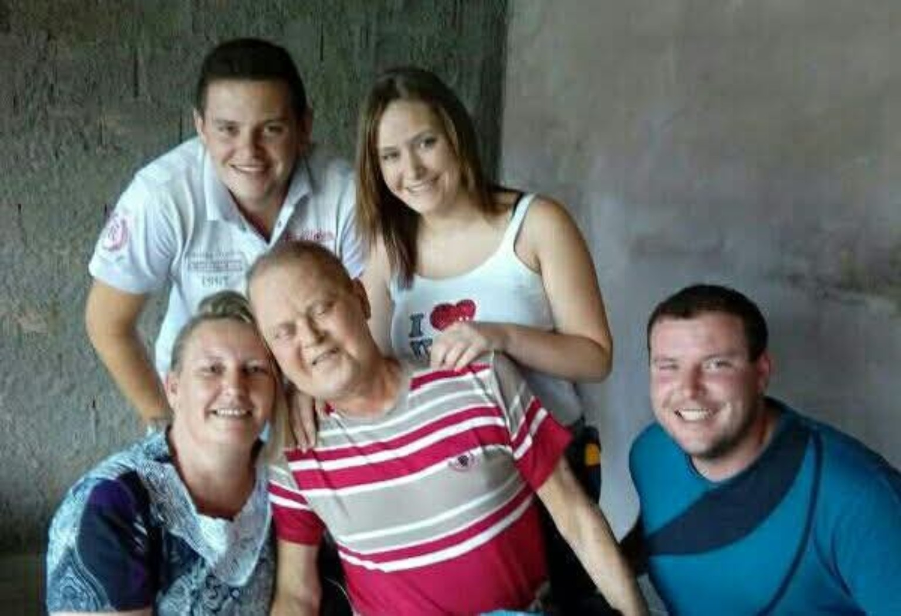
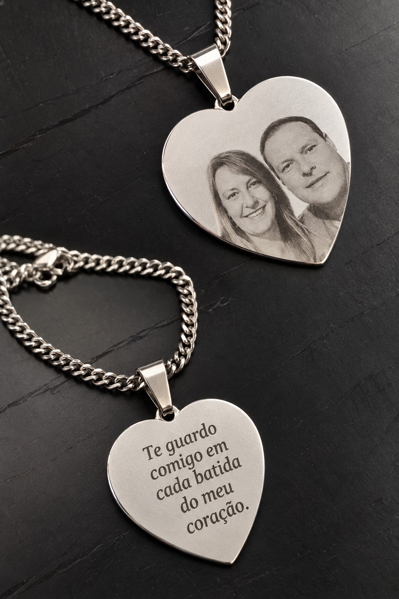
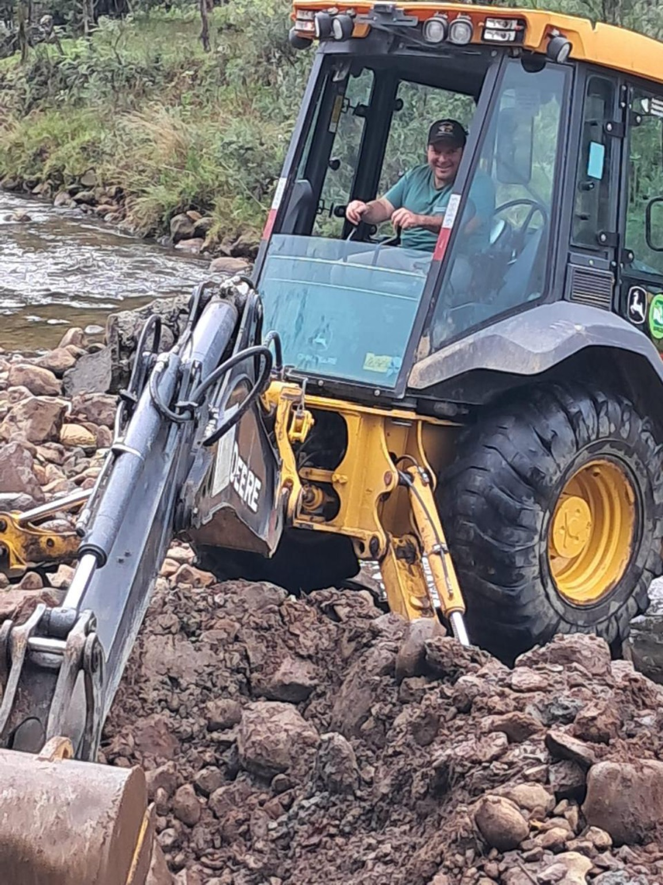
Um momento para guardar
Algumas lembranças ganham ainda mais vida quando podemos assistir e reviver aqueles momentos.
Homenagem
Filipe, sua partida deixou saudade, mas também deixou uma história cheia de momentos que jamais serão esquecidos.
Enquanto houver alguém lembrando do seu sorriso, contando uma história sua, olhando uma fotografia ou revivendo um vídeo, um pouco de você continuará presente.
Você permanece vivo nas lembranças, no carinho e no coração de todos que tiveram a felicidade de conhecer você.